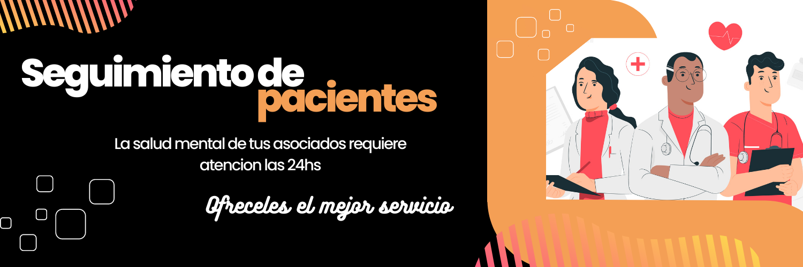
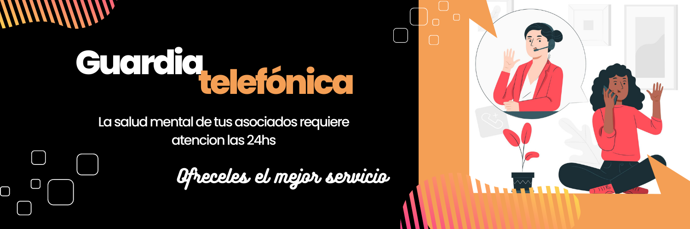
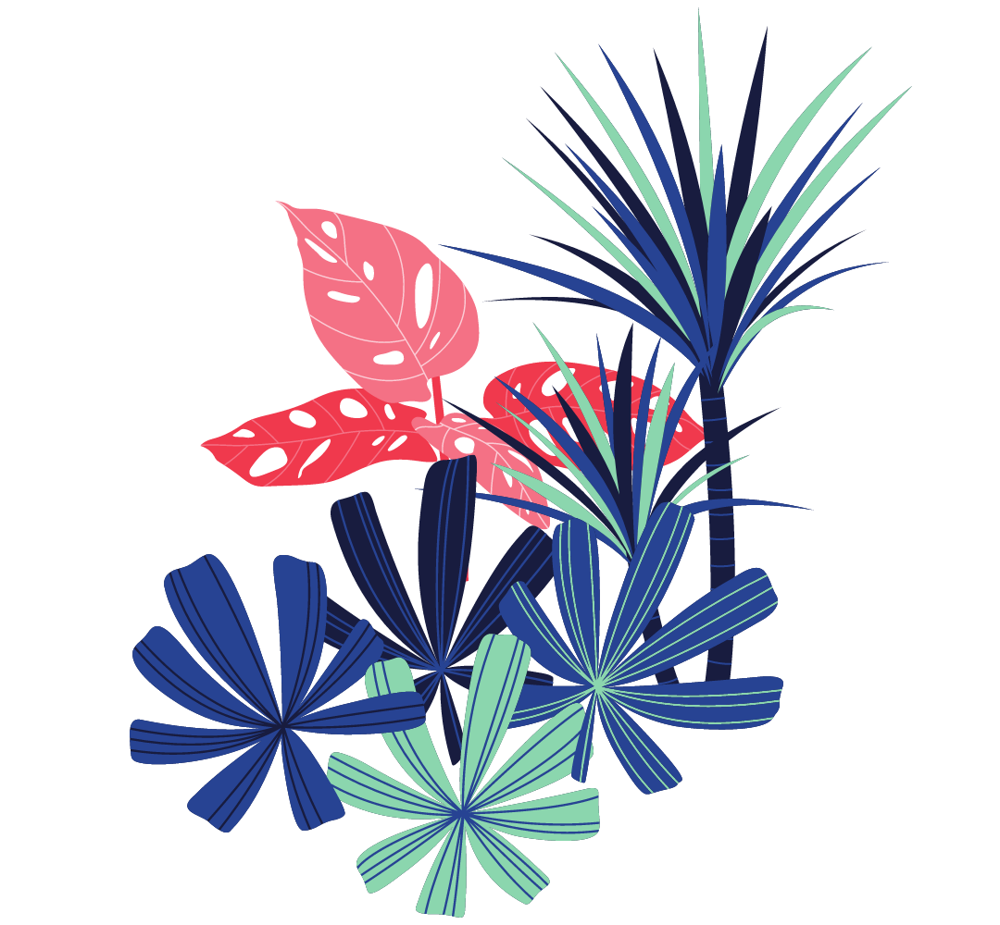

Quienes somos?
Guardia Telefónica
Seguimiento de Pacientes
Contacto


Previous
Next
Seguimiento de pacientes
EL ACOMPAÑAMIENTO QUE
TUS ASOCIADOS NECESITAN
Te ofrecemos un servicio que está disponible para pacientes de diferentes grupos demográficos y con una amplia gama de horarios de atención para adaptarse a las necesidades de tus asociados. Además, nuestro servicio está respaldado por un equipo de profesionales altamente capacitados y con una amplia gama de recursos para ayudar a los pacientes a manejar sus condiciones de salud. Nuestro servicio de seguimiento de pacientes se caracteriza por ser humano y compasivo en su enfoque. Esto incluye una empatía profunda hacia los pacientes y su situación, así como un enfoque en el bienestar emocional y psicológico de tus pacientes asociados.

Superintendencia de Servicios de Salud
Organo Control de Obras Sociales y entidades de Medicina Prepaga
0800-222-SALUD (72583) | www.sssalud.gob.ar | RNEMP Nº 1332